The flow field correction due to buoyancy, 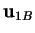, is topologically equivalent to that due to inertia, 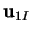, though the sense is reversed.
Three-dimensional flow structures are conveniently discussed in terms of their critical points (Perry & Fairlie 1974; Perry & Chong 1987; Chong, Perry & Cantwell 1990). Interior critical points are those at which the velocity vanishes. Critical points on the boundary are those at which the normal derivative of each component of velocity vanishes.
The two basic types of interior critical points are the saddle-node and the focus. A plane passes through each saddle-node which is tangential to the stream-lines at the point and in which the projections of the stream-lines converge to or diverge from the point--hence the `node' part of the name. The node is referred to as stable or unstable, accordingly as the stream-lines converge or diverge. There are two other planes through the point which are also tangential to stream-lines. The projections of the stream-lines on these planes are separated into four regions by the lines corresponding to the other two planes. The flow is inward along the line corresponding to a stable node and outward along the other line--hence the `saddle' part of the name; the situation is reversed for an unstable node.
A plane tangential to stream-lines also passes through each focus, in which the projections of the stream-lines spiral into or out of the focus accordingly as the focus is stable or unstable. The stream-lines outside this plane coil around the axis of the focus. A focus on the border between stability and instability is called a centre.
The three basic types of surface critical points are the saddle, node and focus.
For
and
, the interior critical points
consist of an axisymmetric saddle-node at 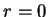 and two congruent
circles about the axis of symmetry along which each
point is a centre in its meridian plane;
these may be called vortex-rings, since
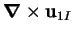 and
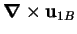 are both purely
azimuthal, having only a  and a
and a  component, respectively,
so that the circles are indeed everywhere parallel to the vorticity.
The boundary critical points are a
separation point (stable node), for
,
and a stagnation point (unstable node), for
,
at each end of the axis of symmetry and a circle
of stagnation points along 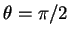 for
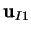 and
separation points along 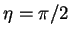 for
.
component, respectively,
so that the circles are indeed everywhere parallel to the vorticity.
The boundary critical points are a
separation point (stable node), for
,
and a stagnation point (unstable node), for
,
at each end of the axis of symmetry and a circle
of stagnation points along 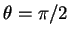 for
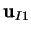 and
separation points along 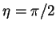 for
.
Each point on the  -axis is a centre in the plane of constant
-axis is a centre in the plane of constant  for the creeping flow, 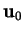. The boundary critical points of
are centres at 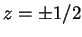.
for the creeping flow, 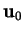. The boundary critical points of
are centres at 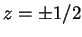.
Since the three points
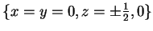
are critical for ,
and
, they are also critical points for
the combined flow to first order in
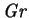,
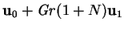.
The addition of the inertial correction
to the creeping flow causes the centres at to become stable
foci, meaning that the limiting surface stream-lines spiral in to the points.
Similarly the centre in the plane 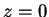 at becomes an unstable focus.
The addition of the buoyancy correction is not as obvious, since it is not
orthogonal to the creeping flow, except in the plane  , where it is
very similar to the inertial correction.
, where it is
very similar to the inertial correction.
It seems that at low Grashof numbers the
basic structure of the flow is defined by the unstable focus in the 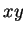-plane
at and the stable surface foci at 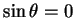. The same conclusion
was reached by Hiller et al. (1989) from their visualization studies of a
cubic enclosure. This distribution of
critical points over the boundary is consistent with the
`hairy-sphere theorem' (Perry & Chong 1987), which states that for surfaces
topologically equivalent to the sphere, the number of nodes and foci must
exceed the number of saddles by two, the Euler number of the surface
(Hilbert & Cohn-Vossen 1952, p. 295). It will be noticed
that the entire flow field can be seen as two nested families of (topological)
tori, separated by the -plane and surrounding the  -axis, plus the line
segments on each half of the
-axis, plus the line
segments on each half of the  -axis.
The Euler number of the torus is zero (Griffiths, H. B. 1976, p. 110),
so that the surfaces need not have any critical points.
-axis.
The Euler number of the torus is zero (Griffiths, H. B. 1976, p. 110),
so that the surfaces need not have any critical points.
The three-dimensional nature of the flow is illustrated in figure 8.11
| 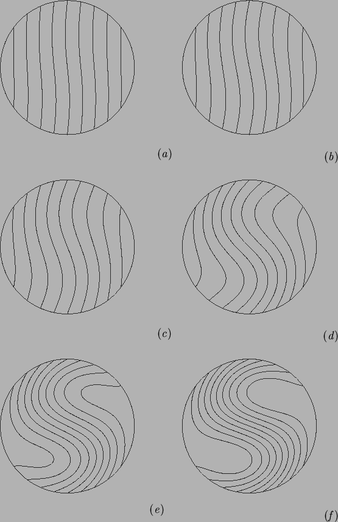 |
| 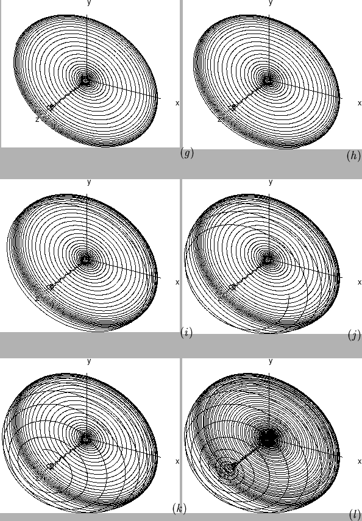 |
The reason why the particle doesn't return to a starting point after a single `traverse' of the stream-surface is not numerical error. In discussing their computed stream-lines in a cuboid, Mallinson and de Vahl Davis (1977), concluded that the stream-lines must be closed, but pointed out that `multiple traverses on the same surface without streamline intersection are, however, possible and cannot be rejected a priori'. In fact, it may be demonstrated that it is entirely (kinematically and topologically) possible for a particle to travel an infinite distance in a steady flow field without returning to its starting point. Stream-lines can only cross at critical points, where their direction is undefined. It follows that stream-surfaces also only intersect at critical points. Consider the family of circles formed by the intersection of the surface of a torus and the family of cones coaxial with the torus and with its vertex at the torus's centre. This family of curves satisfies the kinematic and topological requirements of a set of stream-lines free from critical points; it is, for example, homeomorphic to the family of stream-lines on a typical stream-tube of the creeping flow, . Now cut the surface of the torus with a semi-plane bounded by its axis, twist one of its ends and then rejoin the surface and stream-lines. Unless a rational number of twists were applied to the end, the particle will never return to its starting point, even though it remains on the same finite surface (cf. the discussion of force-free magnetic field lines by Moffatt 1978, p. 30).
The addition of the correction for inertia to the creeping flow has a similar effect to the above cutting, twisting and rejoining operation.